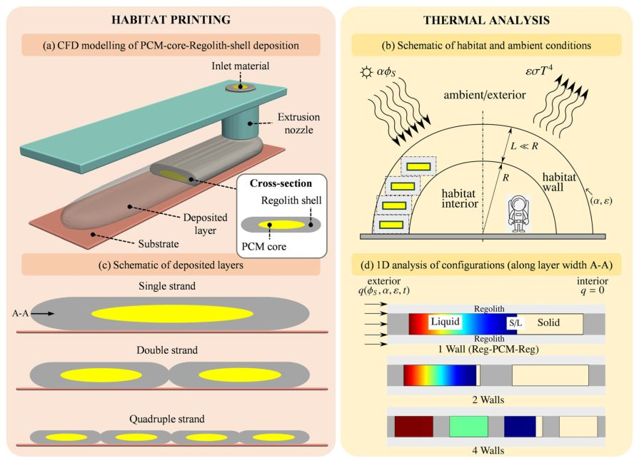
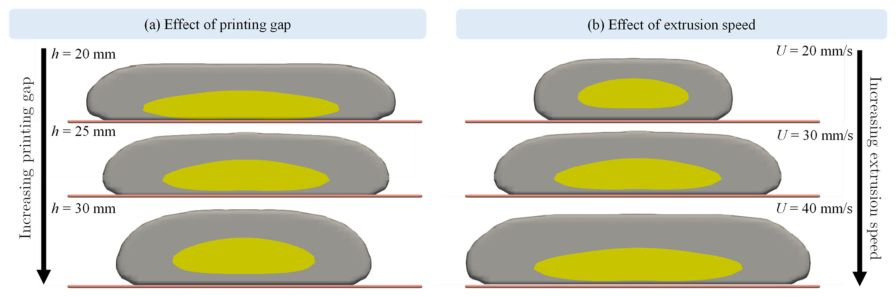
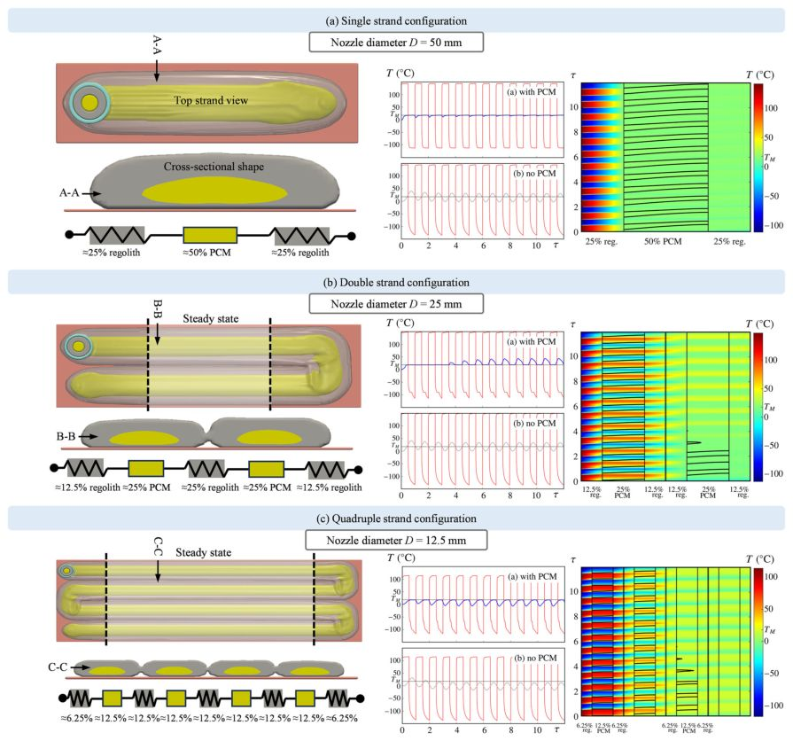

<!DOCTYPE html><html lang="en-us"><head><meta charset="utf-8"><meta name="viewport" content="width=device-width, initial-scale=1"><meta name="description" content="Publications of Md. Tusher Mollah"><title>Numerical Analysis of Coaxially 3D Printed Lunar Habitats: Integrating Regolith and PCM for Passive Temperature Control | Md. Tusher Mollah</title><link rel="stylesheet" href="/css/vendor-bundle.min.047268c6dd09ad74ba54a0ba71837064.css"><link rel="stylesheet" href="/css/wowchemy.042e26407c9e383d96a1f26d6787c686.css"><style>
body{font-size:18px;line-height:1.65}.container{max-width:1100px;margin:0 auto;padding:2rem 1rem}.pub-card-compact{border:1px solid #e7edf5;border-radius:12px;padding:1rem;margin-bottom:1rem;background:#fff;box-shadow:0 3px 14px rgba(0,0,0,.035)}.pub-card-compact h3{font-size:1.08rem;margin:.1rem 0 .45rem}.pub-card-compact .meta,.source-file{color:#5a6472;font-size:.92rem}.pub-actions a,.paper-links a{display:inline-block;margin:0 .35rem .4rem 0;padding:.25rem .55rem;border:1px solid #2b69c9;border-radius:4px;color:#2b69c9;text-decoration:none;font-size:.85rem}.figure-gallery{display:grid;grid-template-columns:repeat(auto-fit,minmax(250px,1fr));gap:1rem;margin-top:1rem}.figure-card{border:1px solid #e7edf5;border-radius:12px;padding:.7rem;background:#fff;box-shadow:0 3px 14px rgba(0,0,0,.035)}.figure-card img{width:100%;height:240px;object-fit:contain;background:#fafafa;border-radius:8px}.figure-card figcaption{font-weight:700;margin-top:.35rem}pre{white-space:pre-wrap;overflow-wrap:anywhere;background:#f8fafc;padding:1rem;border-radius:8px;font-size:.85rem}.back-link{margin-bottom:1.2rem;display:inline-block}.publication-title{font-size:2rem;line-height:1.25;margin-bottom:.6rem}.section-title{margin-top:2rem}
</style></head><body><main class="container"><a class="back-link" href="/publication/">← Back to all publications</a><h1 class="publication-title">Numerical Analysis of Coaxially 3D Printed Lunar Habitats: Integrating Regolith and PCM for Passive Temperature Control</h1><p><strong>A.B. Kachalov, P.S. Sánchez, M.T. Mollah, J.M. Ezquerro, J. Spangenberg, B. Šeta</strong></p><p><strong>Microgravity Science and Technology 37, 38, 2025</strong></p><div class="paper-links"><a href="https://doi.org/10.1007/s12217-025-10194-4">DOI</a><a href="/papers/journal/27 2025 Kachalov et al. - Numerical Analysis of Coaxially 3D Printed Lunar Habitats.pdf">PDF</a><a href="/publication/numerical-analysis-of-coaxially-3d-printed-lunar-habitats-integrating-regolith/cite.bib">Cite</a></div><h2 class="section-title">Abstract</h2><p>Space research is shifting its focus from low-gravity platforms to Moon and Mars exploration, requiring advanced habitat construction. This paper proposes to integrate the 3D printing of regolith and Phase Change Materials (PCM), with a particular interest in lunar habitats. A coaxial printing approach is numerically analyzed, enabling the simultaneous deposition of a regolith shell, providing structural integrity, and a PCM core that helps regulate the interior habitat temperature in a passive manner. Simulations show that 3D printing with a coaxial nozzle can effectively control the shell-core (internal) structure of the habitat wall by adjusting printing parameters or by constructing multi-strand composite walls. The PCM core becomes thicker when using a smaller layer height or a higher extrusion speed during printing. We then examine the expected thermal response of the habitat, initially made of pure regolith and later incorporating the PCM. With just regolith, results indicate that one can select adequate thermo-optical properties at the wall external boundary, and wall thickness, to control the mean temperature in the interior, and associated fluctuations, respectively. Incorporating the PCM, either in single or multiple regolith-PCM strands, is shown to effectively stabilize this internal temperature (Ti →0 K), improving thermal performance and habitat design, and reducing the quantity of required regolith and binder. Since binder has to be brought from Earth, this reduction can be a major factor in enabling sustainable construction on the Moon and beyond.</p><h2 class="section-title">Figures from this paper</h2><div class="figure-gallery"><figure class="figure-card"><a href="figures/fig1.jpg"></a><figcaption>Figure 1</figcaption></figure><figure class="figure-card"><a href="figures/fig2.jpg"></a><figcaption>Figure 2</figcaption></figure><figure class="figure-card"><a href="figures/fig3.jpg"></a><figcaption>Figure 3</figcaption></figure></div><h2 class="section-title">Citation</h2><pre>@article{27_2025_kachalov_et_al_numerical_analysis_of,
  title = {Numerical Analysis of Coaxially 3D Printed Lunar Habitats: Integrating Regolith and PCM for Passive Temperature Control},
  author = {A.B. Kachalov and P.S. Sánchez and M.T. Mollah and J.M. Ezquerro and J. Spangenberg and B. Šeta},
  journal = {Microgravity Science and Technology 37, 38},
  year = {2025},
  doi = {10.1007/s12217-025-10194-4},
  url = {https://doi.org/10.1007/s12217-025-10194-4}
}
</pre></main></body></html>